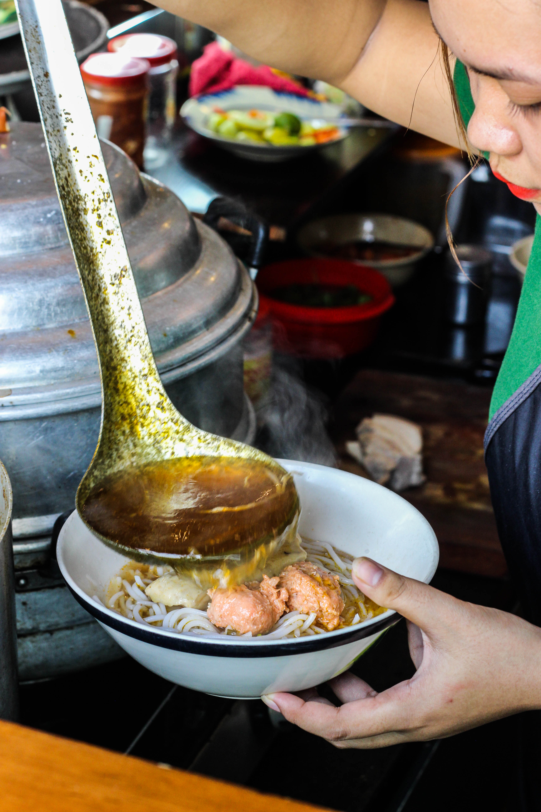

An authentic taste of Hue
Cậu Ba Quán
Tucked away in the allies of Tan Dinh is a unique restaurant. Usually packed with hungry patrons, this open kitchen restaurant serves up some of the best Hue food in Ho Chi Minh.
At vero eos et accusamus et iusto odio dignissimos ducimus qui blanditiis praesentium voluptatum deleniti atque corrupti quos dolores et quas molestias excepturi sint occaecati cupiditate non provident, similique sunt in culpa qui officia deserunt mollitia animi, id est laborum et dolorum fuga.
Bun Bo Hue
At vero eos et accusamus et iusto odio dignissimos ducimus qui blanditiis praesentium voluptatum deleniti atque corrupti quos dolores et quas molestias excepturi sint occaecati cupiditate non provident, similique sunt in culpa qui officia deserunt mollitia animi, id est laborum et dolorum fuga.
Banh Khoai
Cum sociis natoque penatibus et magnis dis parturient montes, nascetur ridiculus mus.
Aenean lacinia bibendum nulla sed consectetur. Etiam porta sem malesuada magna mollis euismod. Fusce dapibus, tellus ac cursus commodo, tortor mauris condimentum nibh, ut fermentum massa.
Nem Lui
Cum sociis natoque penatibus et magnis dis parturient montes, nascetur ridiculus mus. Aenean lacinia bibendum nulla sed consectetur. Etiam porta sem malesuada magna mollis euismod. Fusce dapibus, tellus ac cursus commodo, tortor mauris condimentum nibh, ut fermentum massa justo sit amet risus.
Donec ullamcorper nulla non metus auctor fringilla. Nulla vitae elit libero, a pharetra augue.
Cras mattis consectetur purus sit amet fermentum. Sed posuere consectetur est at lobortis.